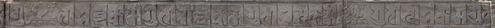

这篇本来想写梵汉英三种语言对照的，然而写到一半发现英语实在是不好翻译，而且很多名词都很难链接到详细的英语资料。
举一个例子：“金刚嬉”的英语我只能翻译成“vajralasya”，其实就是梵语原文，而且我没找到哪里有英语资料详细解释为什么金刚嬉对应的是东方不动佛（更何况对英语读者来说“不动佛”翻译成 not moving buddha 可能都比 Achala 更通俗易懂），也没有能详细解释种子字的。所以我放弃了，只做梵汉吧。
如果有非中文读者搜到了这篇，那么想必以其中文和佛教水平也能自己找到并看懂靠谱的解释。
2023 年 6 月，我和爸爸一起去了白石桥东、长河北岸的真觉寺（也叫五塔寺）。此行主要是为了小小地研究一下寺里的梵文石刻，可惜宝座上的五座小塔早已不对游客开放，所以普通游客能看到的梵文石刻主要是塔基须弥座、大殿（也叫“心珠朗莹殿”）须弥座两处。
本文整理了大殿须弥座上的兰札体（Rañjanā）梵文石刻。以后如果有时间的话，我也会整理一篇塔基须弥座的梵文石刻。
大殿须弥座是被玻璃展示柜保护起来的，我照照片的时候是用手机贴着玻璃照的，可能有一点反光。而且我照相的时候正好是太阳下山的时候，所以很明显能看出西侧的照片很亮、东侧的照片很暗，请读者多担待。
有关真觉寺本身以及塔的资料网上有很多，这里不再赘述了，请感兴趣的读者自行查阅。
大殿须弥座南侧
S1 内四供养及对应外四供养的种子字
1
2
3ॐ वज्रलस्ये हूं / ॐ वज्रमल्ये त्रां / ॐ वज्रगिर्ति ह्रीः / ॐ वज्रनृत्य अः
oṃ vajralasye hūṃ / oṃ vajramalye trāṃ / oṃ vajragirti hrīḥ / oṃ vajranṛtya aḥ
唵 金刚嬉 hūṃ / 唵 金刚鬘 trāṃ / 唵 金刚歌 hrīḥ / 唵 金刚舞 aḥ
注：
| 内四供养 | 方位 | 外四供养 | 种子字 |
|---|---|---|---|
| 金刚嬉 | 东 | 东方不动佛 | hāṃ |
| 金刚鬘 | 南 | 南方宝生佛 | trāḥ |
| 金刚歌 | 西 | 西方阿弥陀佛 | hrīḥ |
| 金刚舞 | 北 | 北方不空成就佛 | aḥ |
表格里的种子字参考的是维基百科，可见和须弥座上的拼写略有不同。
S2 三种乐器
1
2
3विनैवंस्ये / मृडंग / पतहा
vinaivaṃsye / mṛḍaṃga / patahā
琵琶 / 木丹加鼓 / 战鼓
注：
vinaivaṃsye 我不确定是什么，按照 sandhi 规则可能是 vīṇā + evaṃsye，这也是最接近后面两种乐器的翻译。
石板错位。此片段的下文请参考 S5。
S3 四大天王（之一）
1
2
3-य स्वाहा / ॐ विरूटकय स्वाहा
-ya svāhā / oṃ virūṭakaya svāhā
-ya 娑婆诃 / 唵 增长天王 娑婆诃
注：
石板残缺且错位。持国天王在整个须弥座上都没有出现，推测前面的破损片段是持国天王。此片段的下文请参考 E2。
S4 轮王七宝（之一）
1
2
3उःं चक्ररत्न मणिरत्न वस्त्रीरत्न महावरत्न हस्ति-
uḥṃ cakraratna maṇiratna vastrīratna mahāvaratna hasti-
唵 轮宝 珠宝 女宝 主藏宝 象-
注：
石板错位。此片段的下文请参考 W1。
S5 十供养
1
2
3पुष्पे धूपे डीपेः गन्धे वस्त्र वीतनं घन्धे
puṣpe dhūpe ḍīpeḥ gandhe vastra vītanaṃ ghandhe
花 香 灯 香 衣 帐 香
注：
传统意义上的十供养应该是“香、花、灯、涂、果、茶、食、宝、珠、衣”。
首先我不知道为什么这里面有这么多“香”，而且总数量也不对（缺少了三样）。考虑到前面提到的石板错位的问题，或许可以和 S2 的三样乐器组成一种不一样的“十供养”。
S6 五种动物
1
2
3चमरः दसः दीसकरुनः अश्वः गज
camaraḥ dasaḥ dīsakarunaḥ aśvaḥ gaja
牦牛 [?] [?] 马 象
注：
目前没查到这段代表什么。
S7 五妙欲（之二）
1
2
3-गुण शब्दकामगुण गन्धकामगुण रसकामगुण स्पशकामगुण
-guṇa śabdakāmaguṇa gandhakāmaguṇa rasakāmaguṇa spaśakāmaguṇa
-欲 声妙欲 香妙欲 味妙欲 触妙欲
注：
石板错位。此片段的上文请参考 W2。
S8 金刚衣
1
2
3वज्रवस्त्राय अः हूं स्वाहा
vajravastrāya aḥ hūṃ svāhā
金刚衣 aḥ hūṃ 娑婆诃
注：
目前没查到这段代表什么。
S9
1
2
3ॐ कत्रंग आः हूं / ॐ पतग आः हूं / वज्र आः सना
oṃ katraṃga āḥ hūṃ / oṃ pataga āḥ hūṃ / vajra āḥ sanā
唵 [?] āḥ hūṃ / 唵 [?] āḥ hūṃ / 金刚 āḥ 永远
注：
目前没查到这段代表什么。
大殿须弥座西侧
W1 轮王七宝（之二）
1
2
3-रत्न तुरङ्गअस्वरत्न खड्गरत्न
-ratna turaṅgaasvaratna khaḍgaratna
-宝 绀马宝 兵臣宝
注：
石板错位。此片段的上文请参考 S4。
W2 五妙欲（之一）
1
2
3रूपकाम-
rūpakāma-
色妙-
注：
石板错位。此片段的下文请参考 S7。
W3 大力
1
2
3महाबलय हूं फट्
mahābalaya hūṃ phaṭ
大力 hūṃ phaṭ
注：
目前没查到这段代表什么。
大殿须弥座东侧
E1
1
2
3उं [?][?] हूं [?] हूं पाट्
uṃ [?][?] hūṃ [?] hūṃ pāṭ
uṃ [?][?] hūṃ [?] hūṃ pāṭ
注：
这段是后人修复时补写的类似兰札体但不是兰札体的符号。
E2 四大天王（之二）

1
2
3उं विरूपाक्षाय स्वाहा / उं वैश्रवणय स्वाहा
uṃ virūpākṣāya svāhā / uṃ vaiśravaṇaya svāhā
唵 广目天王 娑婆诃 / 唵 多闻天王 娑婆诃
注：
石板错位。此片段的上文请参考 S3。
E3 守护
1
2
3रक्षाः
rakṣāḥ
守护
注：
目前没查到这段代表什么。
一些想法
兰札体释读
须弥座上的梵语是兰札体。
在释读过程中，我参考了林光明教授《兰札体梵字入门》中的“十种兰札字体对照表”，如下面三页所示。
错位
从上述整理可以看出，大殿须弥座有多处石板缺失和错位的情况。比如十供养、四大天王、轮王七宝相关的内容最开始肯定是连在一起的，但后来被装在了分开的地方。并且须弥座文字内容有很明显的后人补写的不是兰札体的字符，应该是因为原文石板缺失造成的。
网上的资料有指出文革期间五塔寺曾经遭到过破坏（我链接了这篇文章，因为我觉得这是一篇非常生动又有历史感的小文），但缺失和错位也有可能是英法联军、八国联军、战乱、唐山大地震、其它地震或者年久失修造成的。
如果有早些时候的照片，或许可以对比得知石板是什么时候产生的错位。可惜我在网上找了很久，没能找到清晰可读的须弥座照片。如果以后我找到了相关照片，会在这里贴出来。
拼写
须弥座上的文字拼写和标准梵语有一些出入，比如金刚嬉 वज्रलस्य（vajralasya）被拼写成了 वज्रलस्ये（vajralasye），香 गन्ध（gandha）被拼写成了 गन्धे（gandhe），增长天王 विरूधक（virūdhaka）被拼写成了 विरूटक（virūṭaka），以及种子字和标准的种子字读音类似但拼写不同。
另一个拼写的差异在于“唵”。有别于通常的 ॐ（oṃ），须弥座短短几段文字用到了 ॐ（oṃ）、उं（uṃ）、उःं（uḥṃ）三种拼法。虽然三者读音类似，但如此多的变体还是不同寻常。
我目前还不清楚为什么须弥座文字中会出现这么多读音类似但拼写稍有不同的情况。
蜗牛
在我照照片的时候，S9 的 ज्र 上有一只蜗牛，导致我几乎把它给看成了 ज्रे 😂
最后
提供一下原图吧。这些是我用手机一张一张照出来以后 photoshop 拼在一起的，图片都比较大，所以正文里没有贴出来。
其实有更大的上百 MB 版本，但既然是在 GitHub repo 里存，我就不放出来了。
欢迎大家自行下载，转载请注明出处。
须弥座南（5.3 MB）
须弥座西（3 MB）
须弥座东（2.2 MB）
欢迎各位读者指正我这篇里可能出现的问题。如果您能提供关于须弥座的老照片的话，也请尽情留言。
{kind=link}
{kind=link}
{kind=link}